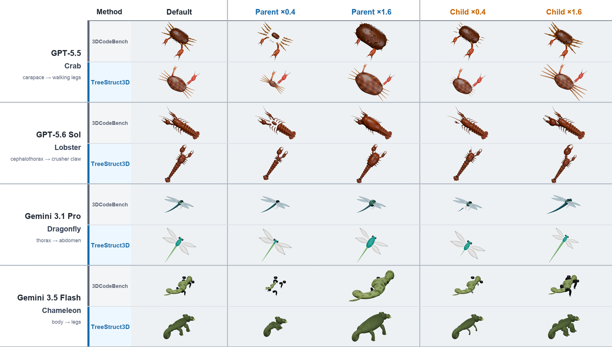
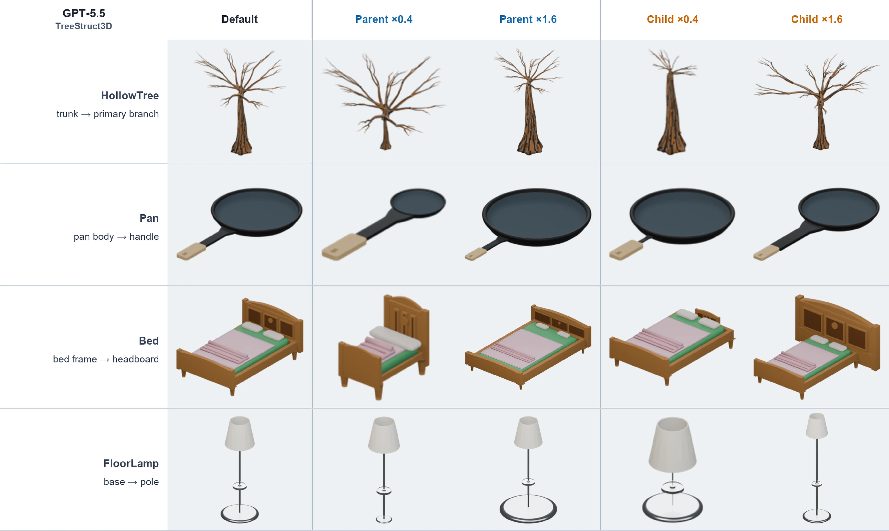
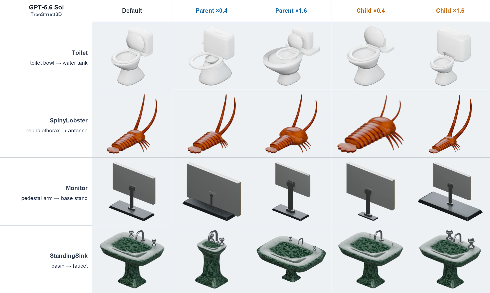
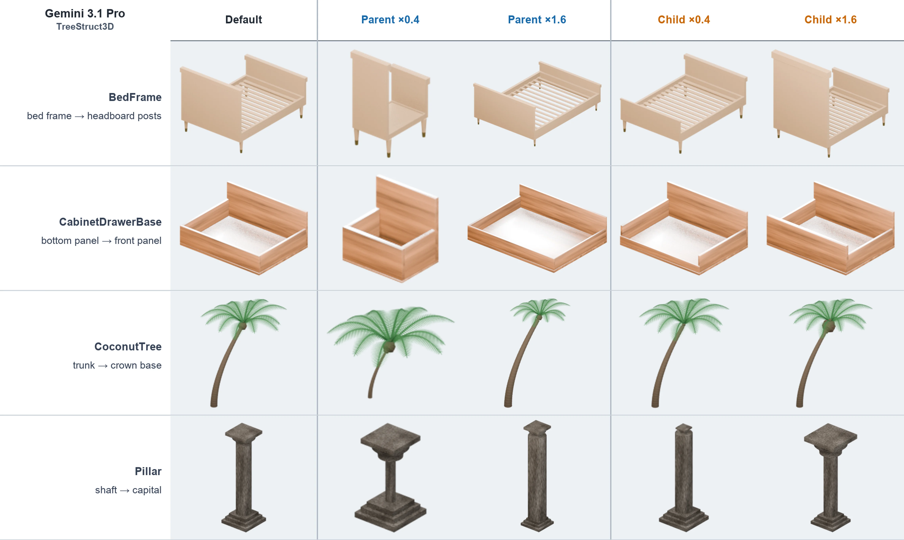
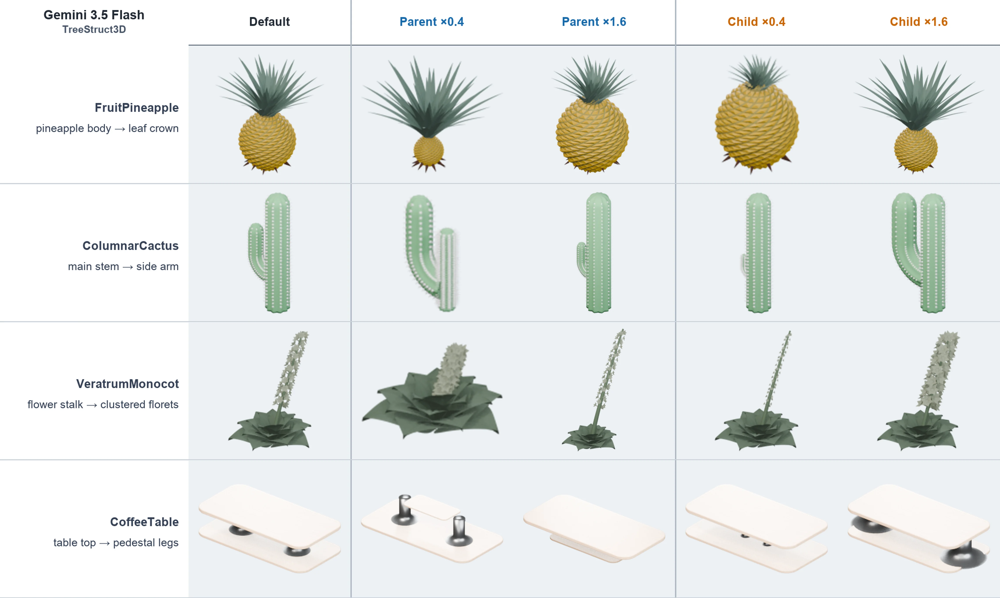

TreeStruct3D
Enabling structural editability in agentic procedural 3D modeling.
Generate Blender programs whose semantic parts stay attached when a parent or child is independently resized—not just assets that look correct once.
Controlled editing at a glance
Structure that survives the edit.
TreeStruct3D represents each object as a directed tree of semantic parts, realizes every attachment with shared anchors, then verifies those relationships after controlled parameter changes.

System pipeline
From a prompt to a verified program.
The system makes structure explicit before code generation and keeps structural verification inside the agentic loop.
- 01 / 04
Extract
Structure blueprint
Turn the object description into semantic parts, a root, directed attachments, and shared-anchor requirements.
- 02 / 04
Generate
Blender program
Condition code generation on the text prompt and the separately extracted structure blueprint.
- 03 / 04
Validate
Structural behavior
Execute the program and check hierarchy, contact, anchors, and independent part perturbations.
- 04 / 04
Repair
Localized feedback
Return precise structural failures for repair before the final visual-refinement pass.
Editable by construction
Appearance is a snapshot. Structure is behavior.
A plausible render can still break when one part changes. TreeStruct3D evaluates the generated program as an editable system: each semantic parameter must update geometry without invalidating its attachments.
Static quality
Does it look right?
Structural quality
Does it keep working?
PART_PARAMS = {
"trunk": { "scale": 1.0 },
"branch": { "scale": 1.0 },
}
SHARED_ANCHORS = {
"trunk_to_branch": {
"parent": "trunk",
"child": "branch",
"world_position": anchor,
}
}
# Parent and child edits are checked independently.
build_scene(PART_PARAMS, SHARED_ANCHORS)Reproducible input boundary
Built on a pinned benchmark snapshot.
212
categories
3DCodeBench evaluation split
636
source files
Verified against one revision
01
model input
Description or instruction text
Upstream provenance
The included 3DCodeBench split comes from the official YipengGao/3DCode dataset and is pinned to an immutable revision.
Start with one object
One config. Two model-facing phases.
API format, endpoint, credentials, model identity, token policy, and retries all come from the selected YAML configuration.
Open the quick startcp configs/config.example.yaml config.local.yaml
export TREESTRUCT3D_API_KEY=your-api-key
./extract_structure.sh \
--config config.local.yaml \
--instances Bird_seed0
./generate_3d.sh \
--config config.local.yaml \
--instances Bird_seed0Qualitative editing gallery
Across four vision-language models.
Each panel shows the default asset beside exaggerated 0.4× and 1.6× parent- and child-side edits. Quantitative evaluation uses 0.8× and 1.2×.



